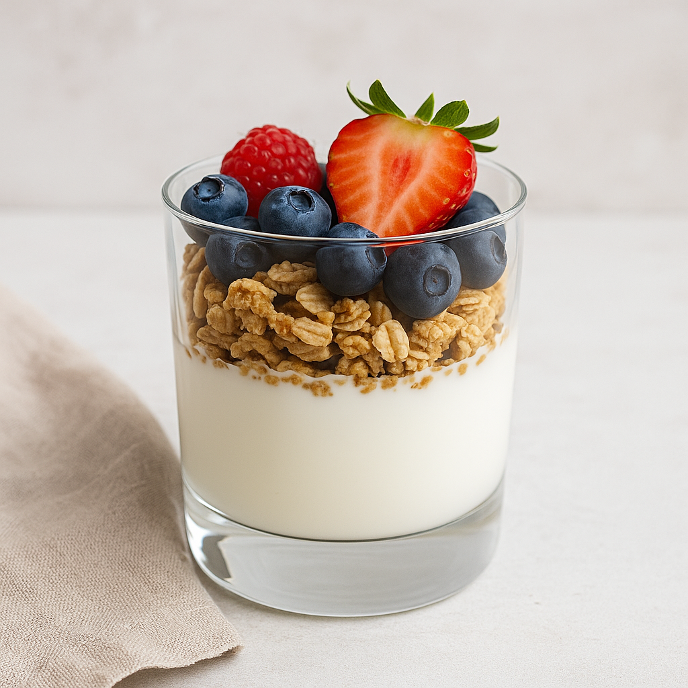

Greek Yogurt Parfait
Yield: 1 serving
Ingredients
- 3/4 cup plain Greek yogurt
- 1/4 cup low sugar granola
- 1/2 cup mixed berries
- 1 tablespoon ground flaxseed
- 1 teaspoon honey (optional)
Instructions
- Add half the yogurt to a glass.
- Layer half the berries and half the granola.
- Repeat layers with remaining yogurt, berries, and granola.
- Sprinkle flaxseed and drizzle honey (optional).